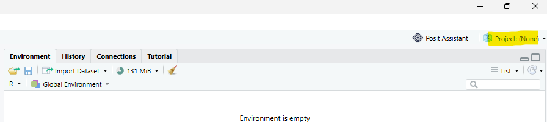
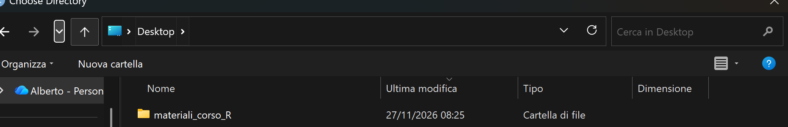
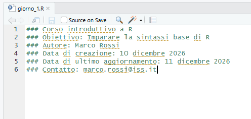
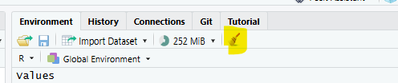

print("Questo è un esempio di soluzione")[1] "Questo è un esempio di soluzione"
Questo esercizio è progettato per essere una guida e per aiutarti a completarlo in autonomia. Ti consigliamo fortemente di provare a eseguire il codice prima di guardare le soluzioni. Per aiutarti, abbiamo incluso in alcuni punti dei suggerimenti che possono indirizzarti nella direzione giusta. Li troverai così:
Clicca per leggere un suggerimento
Questo è un suggerimento.
Le soluzioni, invece, avranno questo aspetto:
Clicca per vedere la soluzione (provaci da solo prima!)
print("Questo è un esempio di soluzione")[1] "Questo è un esempio di soluzione"Durante l’esercizio troverai anche domande a risposta multipla, che servono a verificare se stai seguendo correttamente lo svolgimento. Le domande saranno simili a questa:
Lungo il modulo troverai anche due tipi di riquadri colorati. I riquadri gialli segnalano errori frequenti o punti in cui R si comporta in modo inatteso: leggili sempre, perché possono farti risparmiare tempo.
I riquadri verdi contengono invece approfondimenti facoltativi, per chi vuole andare un po’ oltre: puoi saltarli senza perdere il filo dell’esercizio e tornarci in un secondo momento.
Ti consigliamo di provare comunque a rispondere e a eseguire il codice da solo prima di consultare suggerimenti e soluzioni: è così che si impara davvero a usare R.
Da qui comincia l’esercitazione.
RStudio è un’interfaccia per rendere più semplice l’uso di R. RStudio ha quattro riquadri (se ne vedi soltanto tre, probabilmente non hai ancora aperto uno script).
Riquadro source: In alto a sinistra, è uno spazio per modificare, eseguire e salvare gli script. Gli script contengono i comandi che vuoi eseguire.
Riquadro console: Il riquadro inferiore sinistro è dove troviamo il “motore” di RStudio: R. È qui che i comandi vengono effettivamente eseguiti e vengono visualizzati output non grafici e messaggi di errore/avvisi. Puoi scrivere ed eseguire direttamente i comandi nella console, ma tieni presente che questi comandi non vengono salvati come quando si eseguono i comandi da uno script.
Riquadro environment: In alto a destra, è utilizzato per visualizzare gli oggetti (come per esempio database) importati o creati nella sessione corrente.
Riquadro plots, viewer, packages e help: Il riquadro in basso a destra. La scheda “plots” mostrerà i grafici, mentre altri output interattivi – come tabelle HTML – verranno visualizzati nella scheda “viewer”. La scheda “packages” mostra i pacchetti installati e caricati, permettendo anche l’installazione di nuovi pacchetti. Infine, la scheda “help” si utilizza per ottenere informazioni su funzioni o pacchetti in R.
Se vuoi saperne di più, leggi la sezione dell’EpiRhandbook R Studio
Lavorare dentro un progetto di RStudio è importante perché:
La cartella del corso, materiali_corso_R, contiene tre sottocartelle:
pulizia_dati.R (Moduli 1, 2 e 3), tabelle_grouping.R (Modulo 4), plot.R (Moduli 5, 6 e 8) e join.R (Modulo 7). All’inizio contiene solo la sottocartella backup, con le versioni corrette dei quattro script preparate da noi (backup_pulizia_dati.R, backup_tabelle_grouping.R, backup_plot.R e backup_join.R): puoi usarle per confrontarle con il tuo lavoro o per ripartire se qualcosa non funziona;Ora, assicurati che la cartella materiali_corso_R sia scaricata e decompressa sul tuo computer, poi apri RStudio e infine crea un progetto di RStudio dentro la cartella materiali_corso_R
Clicca per vedere la soluzione (prova da solo prima!)
Per creare un progetto, puoi cliccare su File -> New Project. Puoi anche farlo cliccando sul simbolo di R nell’angolo in alto a destra (vedi immagine sotto) e poi scegliendo New Project.

Vedrai tre opzioni:

New Directory serve per creare una nuova cartella dove sarà creato il progetto. Noi non vogliamo questa opzione perché abbiamo già una cartella pronta.
Existing Directory serve per inserire il progetto in una cartella già esistente sul tuo computer. Scegli questa opzione e seleziona browse. Poi cerca la cartella materiali_corso_R e clicca su Open come indicato nell’immagine sotto.

Dovresti vedere che RStudio si chiude e si riapre. Se tutto è andato a buon fine, nell’angolo in alto a destra dovresti vedere adesso il nome del progetto (come nell’immagine sotto).
Se non riesci, puoi trovare più dettagli su ogni passo in questa sezione dell’EpiRhandbook su R Projects
Il codice di R lo scriveremo in uno script. Questo script è un documento che possiamo salvare e riprendere quando vogliamo.
All’interno di uno script ci sono due elementi: codice e commenti. Un commento è tutto ciò che scriviamo a destra del simbolo cancelletto (#). I commenti aiutano te e gli altri a capire cosa fai e perché lo fai. Vedi l’esempio sotto:
# Questo è un commento
# Leggere i dati
db <- import("dati/dataset_esercitazione_raw.csv") %>% # i commenti si possono anche inserire dopo il codice
# filter(age > 50) # si possono anche usare per disattivare pezzi di codice
count()Ora crea un nuovo script e salvalo nella sottocartella script col nome pulizia_dati. In questo script scriverai il codice dei Moduli 1, 2 e 3. Nello script, comincia scrivendo dei commenti dove indichi: nome e cognome; obiettivo dello script; tua email e la data.
Clicca per leggere un suggerimento
Per aprire uno script, seleziona File -> New File -> R Script.
Clicca per vedere la soluzione (prova da solo prima!)
Il tuo script dovrebbe assomigliare a questo:

Ricorda che c’è una differenza fondamentale tra chiedere a R di fare qualcosa e di stamparlo nella console e chiedere a R di fare qualcosa e salvarlo nell’Environment. Se noi scriviamo una funzione e non usiamo l’operatore di assegnazione <- R lo farà e lo stamperà nella console. Se invece lo usiamo, lo salverà nell’Environment e nella console vedremo soltanto il pezzo di codice che abbiamo lanciato, ma non l’output.
Crea quindi un vettore con i numeri: 24, 98, 233, 9823, 3, -76 e salvalo nell’Environment con il nome numeri. Usa le funzioni adatte per calcolare: numero più alto, numero più basso e somma. Salva poi la media in un oggetto chiamato media_numeri. Crea un vettore con le parole: Roma, Torino, Napoli, Milano, Barie usa una funzione che trasformi questi nomi in lettere maiuscole e salva il vettore nell’Environment col nome citta_italiane
Clicca per leggere un suggerimento
Per creare un vettore devi inserire i numeri (o le città) all’interno della funzione “concatenate” o c() separati da virgole. Ricorda che le parole in R devono essere inserite tra virgolette, mentre i numeri no.
Se vuoi salvare il vettore nell’Environment, scrivi il nome del vettore, poi l’operatore di assegnazione <- e poi il vettore.
Per calcolare la media puoi usare la funzione mean(), mentre per rilevare il numero più alto max() e il numero più basso min(). Invece, per trasformare un vettore testuale in lettere maiuscole puoi usare la funzione toupper().
Clicca per vedere la soluzione (prova da solo prima!)
numeri <- c(24, 98, 233, 9823, 3, -76)
max(numeri)[1] 9823min(numeri)[1] -76sum(numeri)[1] 10105media_numeri <- mean(numeri)
citta_italiane <- c("Roma", "Torino", "Napoli", "Milano", "Bari")
citta_italiane <- toupper(citta_italiane)Adesso cominceremo ad analizzare dati più complessi che somigliano ai dati che un epidemiologo trova nella vita reale.
Il database che useremo puoi trovarlo nella sottocartella dati e si chiama dataset_esercitazione_raw. Questo database contiene dati fittizi che imitano dati individuali di una coorte di persone vaccinate: caratteristiche demografiche (sesso, età, regione), comorbidità (indice di Charlson), stato HIV, data di vaccinazione, data di fine follow-up e data dell’evento. Per ogni persona con HIV sono state scelte, di norma, due persone senza HIV con la stessa regione (REGION), lo stesso sesso (Sex), la stessa classe d’età (Age group, 18-59 o 60+) e la vaccinazione nella stessa settimana. Questo procedimento si chiama appaiamento: la persona con HIV e i suoi due “controlli” hanno lo stesso valore della variabile group
Puoi aprire il database in Excel e dare uno sguardo se vuoi. Il file db_vacc_hiv_data_dictionary.xlsx dentro la sottocartella dati descrive il significato di ogni variabile.
Nei prossimi passi eseguiremo le azioni necessarie per leggere ed esplorare questo database.
La prima parte dello script (oltre a includere – commentate – alcune informazioni sull’obiettivo, autore, data dell’ultimo aggiornamento e dettagli di contatto) consiste nell’installare e caricare i pacchetti.
Fortunatamente c’è un pacchetto che svolge questo compito in modo molto efficace: {pacman}. La funzione p_load() di questo pacchetto installerà tutti i pacchetti elencati non ancora installati e li caricherà. Se un pacchetto elencato era già stato installato, lo caricherà e basta. Puoi trovare maggiori informazioni sull’installazione/caricamento di pacchetti nella sezione Packages dell’EpiRhandbook.
Adesso cancella le funzioni che abbiamo scritto prima e lascia nello script soltanto i commenti descrittivi iniziali. Poi pulisci l’Environment cliccando sulla scopa in alto a destra. Utilizzando l’approccio di pacman::p_load(), prova a installare e caricare i seguenti pacchetti: {rio}, {janitor}, {lubridate}, {skimr}, {epikit}, {gtsummary} e {tidyverse}.
Clicca per leggere un suggerimento
Per pulire l’Environment puoi cliccare sulla scopa in alto a destra:

Clicca per vedere la soluzione (prova da solo prima!)
# installa (se necessario) da CRAN e carica i pacchetti da utilizzare
pacman::p_load(
rio, # importazione dati
skimr, # ottieni panoramica dei dati
janitor, # pulizia dati e tabelle
lubridate, # lavorare con le date
epikit, # per creare categorie di età
gtsummary, # statistiche riassuntive, test e regressioni
tidyverse # gestione e visualizzazione dati
)Esistono diversi modi in cui puoi importare i vari data frame. Ci sono tre versioni del file che vogliamo leggere (dataset_esercitazione_raw): una è un file Excel, l’altra è un file csv e l’ultima è un file con formato di R (.rds). Un modo per leggerlo potrebbe essere utilizzare funzioni specifiche di R, ad esempio, read_excel() da {readxl}, read.csv() o readRDS(). Tuttavia, questo significherebbe dover usare una funzione diversa per ogni tipo di file e, a volte, doverne impostare con attenzione gli argomenti. Ad esempio, il nostro file csv usa il punto e virgola (;) come separatore e ha una riga di testo iniziale (“Dati creati il 23/10/2026”) prima dei nomi delle variabili: read.csv() con le impostazioni predefinite non lo leggerebbe correttamente. Fortunatamente, esiste un approccio più efficiente che consiste nell’usare la funzione import() da {rio} per aprire qualsiasi file. Questa funzione riconoscerà il tipo di file e sceglierà la funzione appropriata per importarlo (nel caso del nostro csv, riconoscerà da sola anche il separatore e la riga iniziale). Se vuoi saperne di più sulle funzioni di importazione, leggi il capitolo Import and Export dell’EpiRhandbook.
Importa il database dataset_esercitazione_raw.csv utilizzando import() da {rio} e salvalo nell’Environment col nome dati_raw.
Clicca per vedere la soluzione (prova da solo prima!)
# leggere i dati di HIV
dati_raw <- import("dati/dataset_esercitazione_raw.csv")Prova a scoprire il numero di variabili e righe, la classe delle variabili e se questa corrisponde alla sua natura (ad esempio, le “date” sono considerate “date” da R?). Guarda poi le diverse categorie delle variabili su gender, hospital, outcome o fever. Pensi di aver bisogno di ricodificarne qualcuna? Infine, esplora la variabile AGE: di che classe è? Pensi si debba cambiare qualcosa?
Clicca per leggere un suggerimento
Un modo efficiente per esplorare i dati è usare la funzione skim() dal pacchetto {skimr}, poiché fornisce tutte le informazioni necessarie con un solo comando. Naturalmente, ci sono diverse alternative. Per conoscere le diverse categorie in una variabile, puoi usare la funzione tabyl() da {janitor}, che ti fornirà conteggi e percentuali di ogni categoria nella variabile di dati.
Clicca per vedere la soluzione (prova da solo prima!)
# esplorare tutto il database con skimr
skim(dati_raw)| Name | dati_raw |
| Number of rows | 47743 |
| Number of columns | 16 |
| _______________________ | |
| Column type frequency: | |
| character | 11 |
| numeric | 5 |
| ________________________ | |
| Group variables | None |
Variable type: character
| skim_variable | n_missing | complete_rate | min | max | empty | n_unique | whitespace |
|---|---|---|---|---|---|---|---|
| subject ID | 0 | 1 | 5 | 6 | 0 | 47738 | 0 |
| REGION | 0 | 1 | 0 | 8 | 1 | 11 | 0 |
| Sex | 0 | 1 | 1 | 7 | 0 | 7 | 0 |
| AGE | 0 | 1 | 2 | 7 | 0 | 85 | 0 |
| Age group | 0 | 1 | 0 | 7 | 2 | 6 | 0 |
| Charlson_Index | 0 | 1 | 1 | 3 | 0 | 4 | 0 |
| HIV Status | 0 | 1 | 0 | 5 | 2 | 6 | 0 |
| Vaccination Date | 0 | 1 | 10 | 11 | 0 | 158 | 0 |
| End_Follow-Up | 0 | 1 | 8 | 8 | 0 | 157 | 0 |
| Event date | 0 | 1 | 0 | 10 | 37830 | 110 | 0 |
| Internal Note | 0 | 1 | 0 | 8 | 35787 | 3 | 0 |
Variable type: numeric
| skim_variable | n_missing | complete_rate | mean | sd | p0 | p25 | p50 | p75 | p100 | hist |
|---|---|---|---|---|---|---|---|---|---|---|
| Group | 0 | 1.00 | 21839.34 | 12833.13 | 1.0 | 10462.0 | 22426.0 | 33457.0 | 42861 | ▇▆▇▆▇ |
| Charlson score | 0 | 1.00 | 0.52 | 0.94 | 0.0 | 0.0 | 0.0 | 1.0 | 7 | ▇▁▁▁▁ |
| Anticorpi | 0 | 1.00 | 2348.44 | 3088.86 | 2.4 | 660.7 | 1398.3 | 2856.4 | 78405 | ▇▁▁▁▁ |
| CD4 | 31708 | 0.34 | 614.68 | 345.89 | 5.0 | 359.0 | 568.0 | 815.0 | 2589 | ▇▇▂▁▁ |
| Row number original | 0 | 1.00 | 23869.74 | 13780.85 | 1.0 | 11935.5 | 23869.0 | 35803.5 | 47738 | ▇▇▇▇▇ |
# esplorare categorie di una variabile "character" o "factor"
tabyl(dati_raw, Sex)| Sex | n | percent |
|---|---|---|
| F | 13093 | 0.2742392 |
| FEMALE | 1 | 0.0000209 |
| Female | 1 | 0.0000209 |
| M | 34644 | 0.7256352 |
| Unknown | 2 | 0.0000419 |
| f | 1 | 0.0000209 |
| m | 1 | 0.0000209 |
tabyl(dati_raw, REGION)| REGION | n | percent |
|---|---|---|
| 1 | 0.0000209 | |
| A | 5880 | 0.1231594 |
| B | 7103 | 0.1487757 |
| C | 27394 | 0.5737804 |
| D | 7349 | 0.1539283 |
| E | 4 | 0.0000838 |
| F | 8 | 0.0001676 |
| Region A | 1 | 0.0000209 |
| Region D | 1 | 0.0000209 |
| a | 1 | 0.0000209 |
| f | 1 | 0.0000209 |
tabyl(dati_raw, Charlson_Index)| Charlson_Index | n | percent |
|---|---|---|
| 0 | 33442 | 0.7004587 |
| 1-2 | 12686 | 0.2657143 |
| 3-4 | 1487 | 0.0311459 |
| 5+ | 128 | 0.0026810 |
Ecco come dovrebbe essere la parte del tuo script relativa a questa esercitazione. Confrontala con la tua: i commenti e alcuni comandi possono essere diversi, ma le funzioni utilizzate devono fare le stesse cose, nello stesso ordine. È anche il codice da copiare e incollare all’inizio delle prossime esercitazioni, per partire tutti dallo stesso punto.
Clicca per vedere lo script completo
### Corso introduttivo a R
### Obiettivo: Imparare la sintassi base di R
### Autore: Marco Rossi
### Data di creazione: 10 dicembre 2026
### Data di ultimo aggiornamento: 11 dicembre 2026
### Contatto: marco.rossi@iss.it
# Caricamento pacchetti ---------------------------------------------------
pacman::p_load(
rio, # importazione dati
skimr, # ottieni panoramica dei dati
janitor, # pulizia dati e tabelle
lubridate, # lavorare con le date
epikit, # per creare categorie di età
gtsummary, # statistiche riassuntive, test e regressioni
tidyverse # gestione e visualizzazione dati
)
# Importazione dati -------------------------------------------------------
dati_raw <- import("dati/dataset_esercitazione_raw.csv")
# Esplorazione ------------------------------------------------------------
skim(dati_raw)Salva lo script.
In questo modulo hai visto:
# è un commento che R non esegue.<-: senza, R stampa il risultato nella console; con questo operatore, invece, lo salva nell’Environment come un oggetto che possiamo utilizzare dopo.p_load() di {pacman} installa (se necessario) e carica i pacchetti in un solo passaggio.import() di {rio} legge qualsiasi formato di file (csv, Excel, rds…) riconoscendolo da sola.skim() di {skimr} fornisce in un solo comando dimensioni, classi delle variabili, valori mancanti e statistiche descrittive; tabyl() di {janitor} mostra conteggi e percentuali delle categorie di una variabile.| Argomento | Risorsa |
|---|---|
| Elementi essenziali di R | Epi R Handbook, cap. 3 “R basics”: https://epirhandbook.com/en/new_pages/basics.html |
| Passaggio da altri software statistici a R | Epi R Handbook, cap. 4 “Transition to R”: https://epirhandbook.com/en/new_pages/transition_to_R.html |
| Importazione dati | Epi R Handbook, cap. 7 “Import and export”: https://epirhandbook.com/en/new_pages/importing.html |